When acid rain fell on southern Scandinavia, brown trout and salmon disappeared from many lakes and rivers. Researchers found that the acid itself was often not the main killer. The fish died from aluminium, washed out of the soil by the acid.
Yet in brown, humic lakes with the same pH and the same aluminium, fish often survived.
Today you will learn to:
see that a dissolved total is not the free ion;
describe complexation and hydrolysis, and tell them apart from redox;
use a one-ligand model to find the free metal;
test mineral saturation with the free ion, not the total.
Last lecture showed that dissolved organic matter carries binding groups. Today we use them.
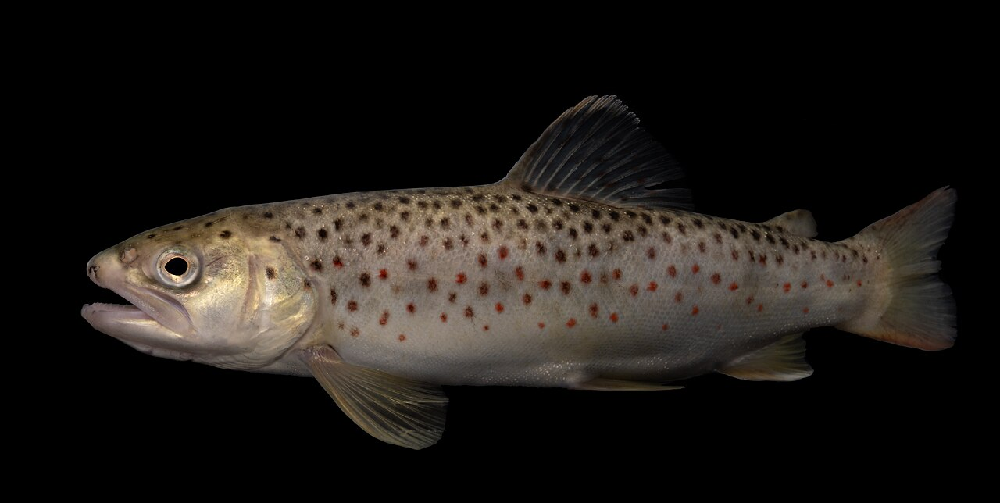
Brown trout (Salmo trutta), a species lost from many acidified Scandinavian lakes. Photo: Sam Stukel, USFWS, public domain, Wikimedia Commons.
Same total, different danger
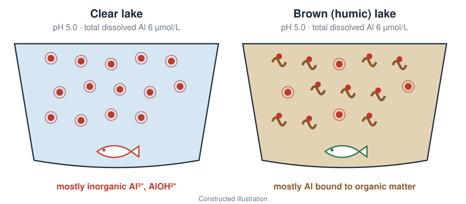
Two constructed lakes have the same pH (5.0) and the same total dissolved aluminium. In the clear lake, most aluminium is present as small inorganic ions. In the brown lake, most is held by dissolved organic matter.
Question for this lecture: how can the same total hide such different chemistry, and how do we calculate the part that matters?
What does “dissolved metal” contain?
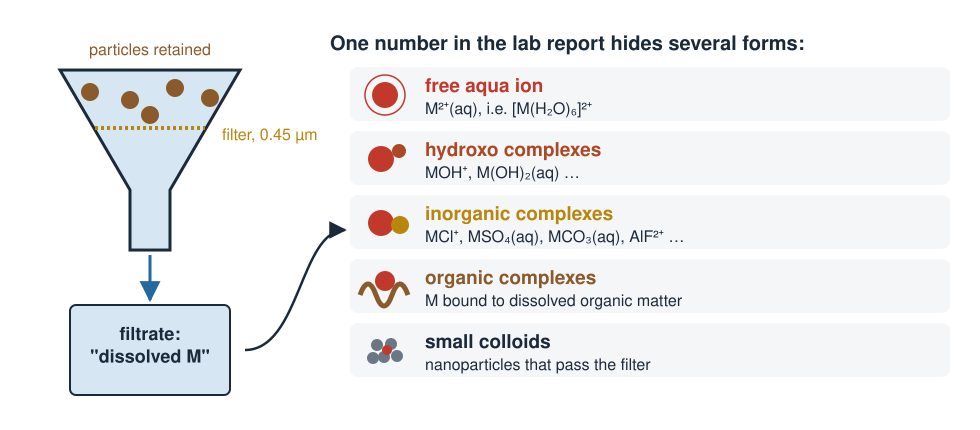
“Dissolved” usually means whatever passes a 0.45 µm filter. It is an operational definition. The filtrate holds the free ion, several kinds of complexes and even small colloids. One number sums them all.
A metal ion in water is already a complex
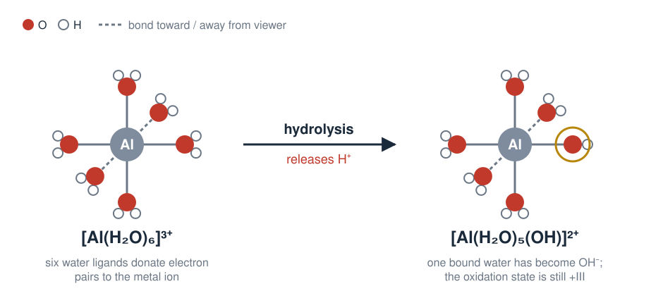
A dissolved Al³⁺ ion is surrounded by six water molecules. Each donates an electron pair to the metal: the waters are ligands, the whole unit is a complex. Another ligand can replace a water (complexation), or a bound water can lose H⁺ (hydrolysis). In both cases aluminium stays at +III.
Ligands that compete with water
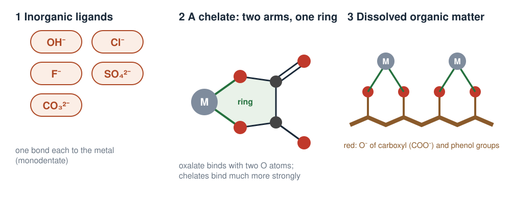
Natural waters offer inorganic ligands that bind with one atom, and organic ligands that can bind with two or more. A ligand that grips the metal with two arms forms a ring, a chelate. Chelates usually bind much more strongly. Dissolved organic matter carries many such groups.
Four ways a metal changes form
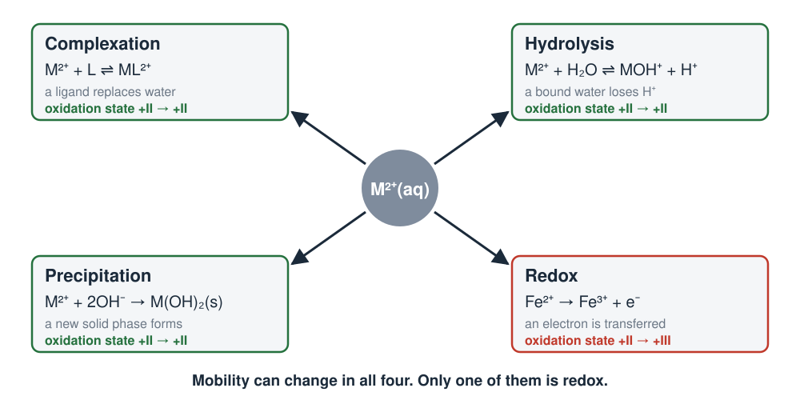
Complexation, hydrolysis and precipitation all keep the oxidation state. Only redox moves electrons. Each process can change how mobile a metal is, so a change in mobility is not evidence of redox by itself.
A one-ligand model
For one complex, \mathrm{M+L\rightleftharpoons ML}:
With ten times less ligand, β[L] = 1.00 and the metal splits 1.00 : 1.00.
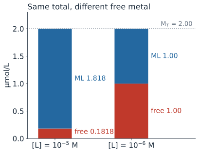
Check the ligand before you trust the answer
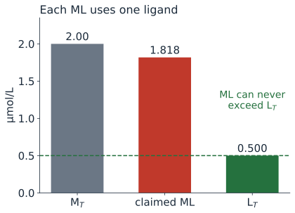
The model asks for free ligand. That is safe only if the ligand is in large excess, so binding hardly uses it up.
Suppose total ligand LT is only 0.500 µmol/L. A claim of 1.818 µmol/L ML is then impossible: each ML uses one ligand. At most 0.500 µmol/L can be complexed, and at least 1.50 µmol/L of metal stays outside ML.
When ligand is scarce, write a second balance, L_T=[\mathrm{L}]+[\mathrm{ML}], and solve both together.
Hydrolysis makes metal ions acids
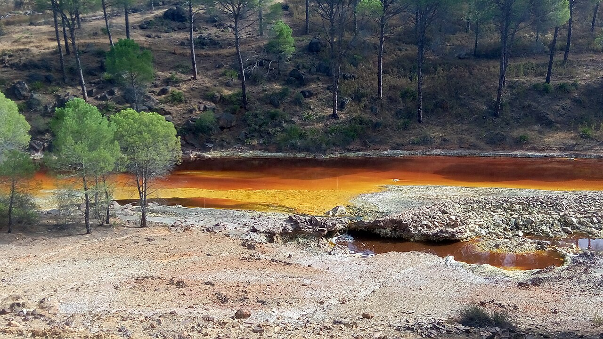
Río Tinto, Huelva, Spain. Photo: David Mata Verdejo, CC BY-SA 4.0, Wikimedia Commons.
The more charged and smaller the ion, the more strongly it pulls on its water, and the easier the proton leaves. For Al³⁺ the pKa is about 5. For Fe³⁺ it is about 2.
Spain’s Río Tinto drains sulfide ores that have been mined for thousands of years. Its water has a pH near 2 and carries iron(III), whose hydrolysis products colour the river red.
Why acid water carries so much aluminium
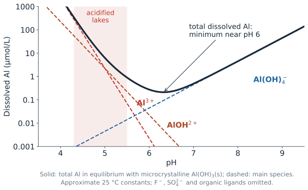
In equilibrium with solid Al(OH)₃, dissolved aluminium is lowest near pH 6. Below that, every pH unit raises Al³⁺ a thousandfold, because the solid takes up three H⁺. In this model, pH 5 water holds about thirty times more Al than at the minimum.
Test saturation with the free ion
For a fictitious hydroxide, \mathrm{M(OH)_2(s)\rightleftharpoons M^{2+}+2OH^-}:
With Ksp = 1.00 × 10⁻¹⁶ and pH 9 ([OH⁻] = 10⁻⁵ mol/L): [M²⁺]sat = 1.00 µmol/L.
A water holds 10.0 µmol/L total with β[L] = 9.00. Free M = 10.0 / 10.0 = 1.00 µmol/L: exactly saturated.
Using the total would wrongly suggest a tenfold excess.
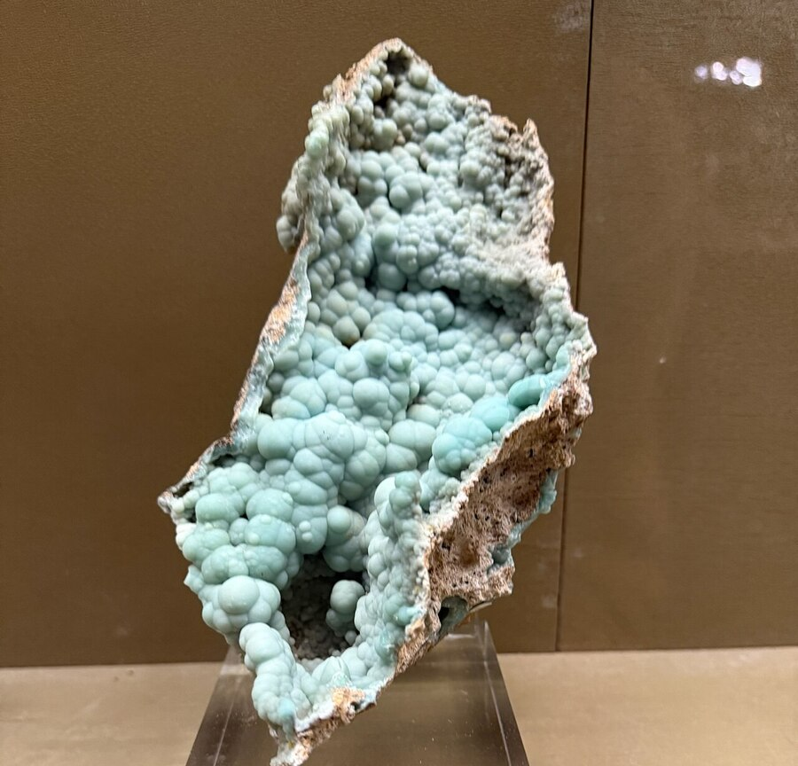
Gibbsite, Al(OH)₃, the natural aluminium hydroxide mineral (museum specimen). Photo: TheUltimateGrass, CC0, Wikimedia Commons.
Complexation raises the dissolved total
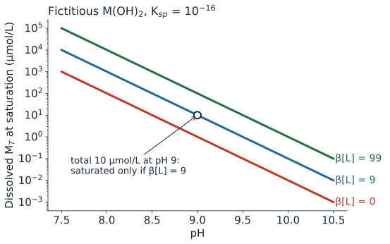
At saturation the free ion is fixed by Ksp and pH. Each line adds complexed metal on top: dissolved total = [M²⁺]sat × (1 + β[L]). A strong ligand lets far more metal stay in solution beside the same solid.
Check yourself
Use the one-ligand model and the saturation rule.
MT = 5.0 µmol/L and β[L] = 4.0. What are free M and ML?
A report says “dissolved copper 3 µg/L”. Name three forms that could make up this number.
Iron changes from a dissolved complex to a solid hydroxide. Is this redox?
Two waters at pH 9 contain 10 µmol/L total M. One has β[L] = 0, the other β[L] = 9. Which is supersaturated with M(OH)₂?
Back to the lakes: how aluminium harms fish
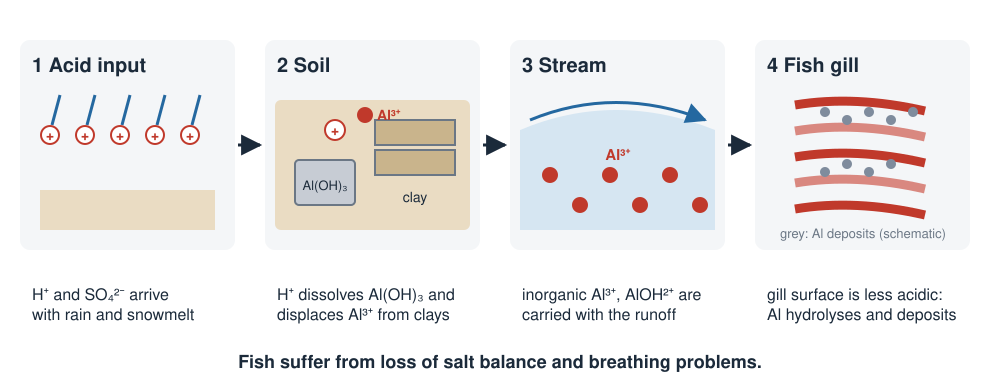
Acid input dissolves aluminium from soil minerals and clays. Runoff carries inorganic Al to the stream. At the fish gill the water is less acidic, so aluminium hydrolyses and deposits on the gill surface, disturbing salt balance and breathing.
Why the brown lake was safer
Return to the two lakes. Use the model with the lake numbers, treating organic matter as one ligand with β[L] ≈ 10 (constructed):
clear lake: β[L] ≈ 0, so nearly all 6 µmol/L Al is inorganic;
brown lake: free fraction = 1/11, about 0.5 µmol/L inorganic Al.
Same total, about ten times less of the harmful form.
Biological effect also depends on the organism, calcium and other ions. The model compares chemistry, not risk.
A filtered metal rises as pH falls
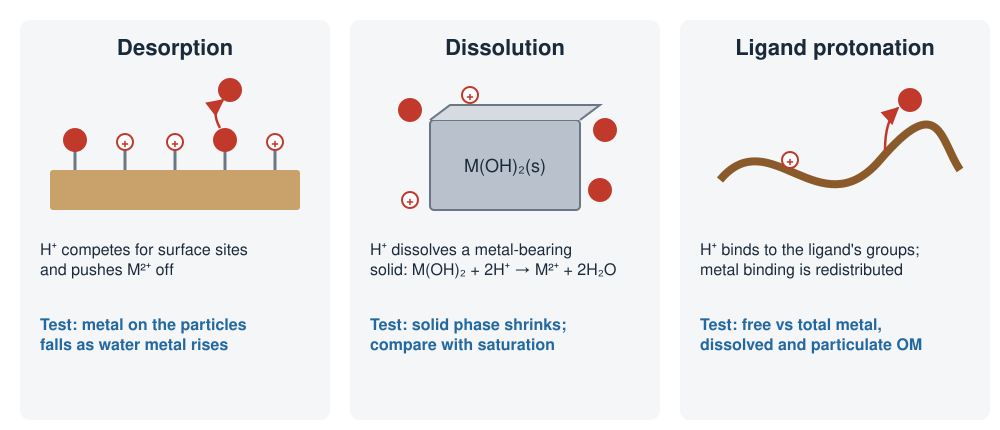
The oxidation state stays the same, so redox is not needed. Acid can desorb metal from particles, dissolve a metal-bearing solid, or protonate a ligand and shift the binding. Each mechanism predicts a different measurement.
Metals from mines: a Swedish legacy
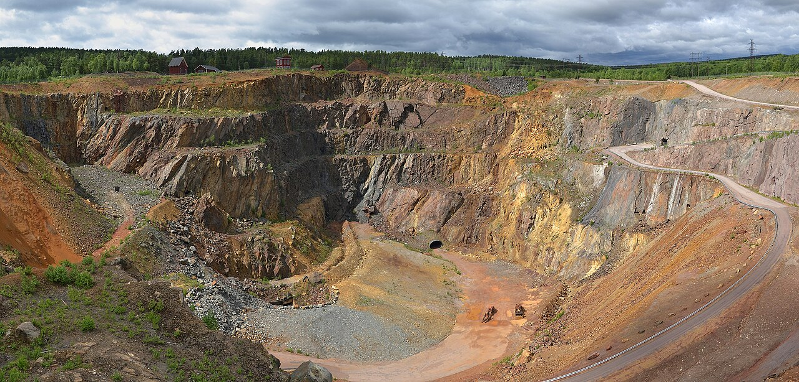
Stora Stöten, the great pit of the Falun copper mine, Sweden. Photo: Pudelek, CC BY-SA 4.0, Wikimedia Commons.
Copper was mined at Falun for about a thousand years. Today the mine is a World Heritage Site.
When sulfide ore meets air and water, it oxidises and releases acid and dissolved metals. Downstream, as the water is neutralised, iron and aluminium hydrolyse and precipitate as orange and white solids.
Those fresh solids have large, reactive surfaces that bind copper, zinc and lead. That is the next lecture.
Common mistakes to avoid
“Dissolved means free.” A filtered total includes complexes and small colloids.
“The metal changed form, so it was oxidised.” Complexation, hydrolysis and precipitation keep the oxidation state.
“Put total ligand into β[L].” The model needs free ligand; check that ligand is in excess.
“Compare the total with Ksp.” Saturation is tested with the free ion.
“Bound metal is harmless.” A dissolved complex can still travel, and it can release metal if conditions change.
“A free-ion calculation predicts toxicity.” It compares chemistry; biological effect needs more information.
Explore: metal binding and saturation
Compare the exactly saturated case with the same total and no ligand.